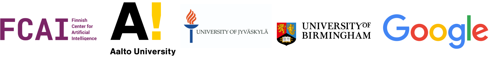

CRTypist:
Simulating Touchscreen Typing Behavior
via Computational Rationality
üèÖ Best Paper Honorable Mention @ CHI 2024 Honolulu
Authors
Danqing Shi Yujun Zhu Jussi P.P. Jokinen Aditya Acharya Aini Putkonen Shumin Zhai Antti Oulasvirta Abstract
Touchscreen typing requires coordinating the fingers and visual attention for button-pressing, proofreading, and error correction. Computational models need to account for the associated fast pace, coordination issues, and closed-loop nature of this control problem, which is further complicated by the immense variety of keyboards and users. The paper introduces CRTypist, which generates humanlike typing behavior. Its key feature is a reformulation of the supervisory control problem, with the visual attention and motor system being controlled with reference to a working memory representation tracking the text typed thus far. Movement policy is assumed to asymptotically approach optimal performance in line with cognitive and design-related bounds. This flexible model works directly from pixels, without requiring hand-crafted feature engineering for keyboards. It aligns with human data in terms of movements and performance, covers individual differences, and can generalize to diverse keyboard designs. Though limited to skilled typists, the model generates useful estimates of the typing performance achievable under various conditions.